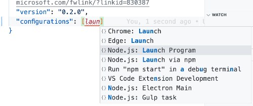
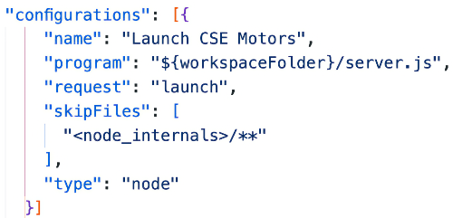

Debugging in VS Code
Introduction
Undoubtedly, you have had errors in your code as you have worked in the course. This short exercise is meant to introduce you to some basic debugging techniques.
Watch the Video
Here is a short, 6-minute video showing the essential debugging process of a Node application in VS Code. Just watch it the first time through.
Alternative Video
This video is longer, but covers more options and also uses a more realistic situation with an error in a function. The VS Code debugger portion begins at around 9:30.
Create the launch.json debugger file
- In the VS Code debugger tool, click the "create a launch.json file" link just below the "Run and Debug" button.
- When the file opens, click between the square brackets in the "configurations" item.
- Begin typing "launch". In the options list that appears, select "Node.js: Launch Program".
 - Alter the code to look like the image below:
 - Save the file.
Try it out
- Open one of the model files and intentionally implement an error into the SQL code.
- Following the process shown in the video, set a breakpoint in a controller that makes use of the model into which the error was created.
- Use the debugger to view the variables and functions until you can identify the issue in the debugger.
- When you feel confident that you can do this, exit the debugger and fix the error.
Paired Programming Exercise
Now that you have a small bit of experience on you own, it's time to practice while working with another member of your learning team.
- Arrange with another member of your learning team to meet together. Give yourselves between 30 and 60 minutes to do this activity.
- Just like you did before, introduce an error into your code (know where it is at, so you can fix it when you're done, if needed.)
- If meeting in a classroom where you are both physically present, just trade computers to do the debugging. One will debug while the owner observes.
- If in an online class, complete this in your Learning Team meeting, and complete the Learning Team report before leaving the meeting. One will share their VS Code application, and the one doing the debugging will request control and do the debugging using the Zoom interface. See How to use Remote Control on Zoom for more information. Each person will take only 50% of the time maximum, while the other person watch. Then trade.
- Only set breakpoints and use the debugger to find the error. Fix the issue ONLY with the permission of the code owner! Do NOT change any other code.
Conclusion
The intent is NOT to make you a professional debugger in one activity; rather, to expose you to the debugger tool and give you some practice. I strongly encourage you to use the debugger when you encounter issues to gain more experience finding and fixing code issues.